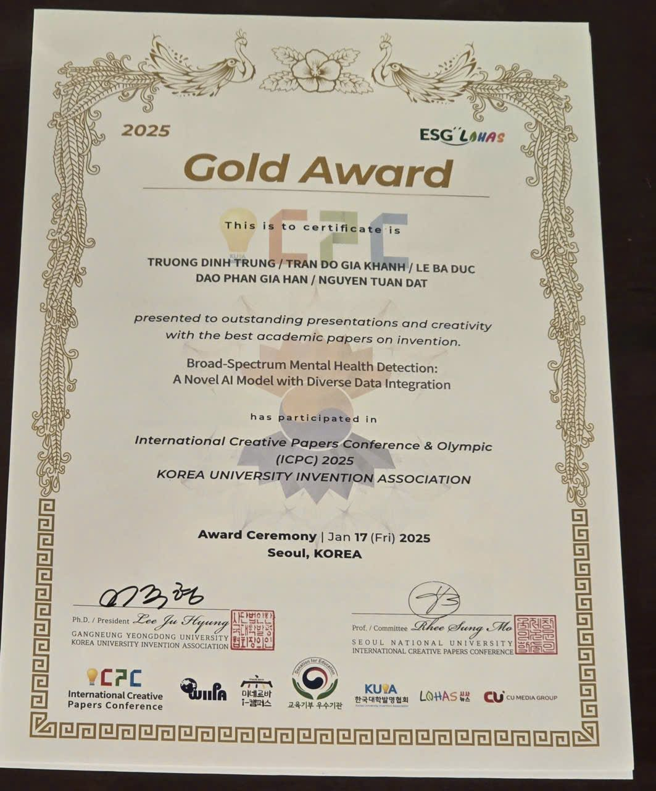
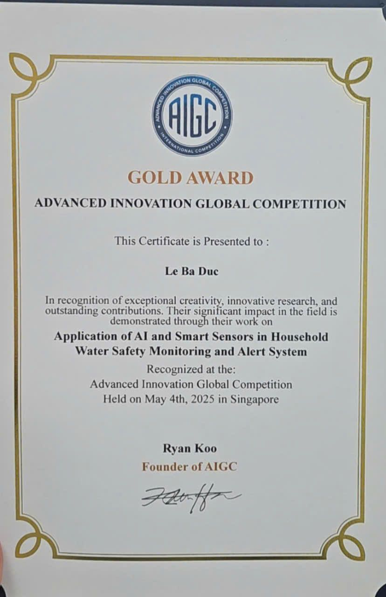

International awardsGiải thưởng quốc tế
ICPC 2026 — International Creative Papers Conference & Olympic
Project “Broad-Spectrum Mental Health Detection: A Novel AI Model with Diverse Data Integration” — a multi-source AI model for early detection of mental-health risk. Gold medal plus Special Award.Đề tài “Broad-Spectrum Mental Health Detection: A Novel AI Model with Diverse Data Integration” — mô hình AI tích hợp nhiều nguồn dữ liệu để phát hiện sớm nguy cơ sức khỏe tâm lý. Giải Vàng kèm Giải đặc biệt.

AIGC 2025 — International AI Generated Content Competition
Gold medal for “Application of AI and Smart Sensors in Household Water Safety Monitoring and Alert System” — smart sensors combined with AI to monitor and raise alerts on household water safety. Awarded in Singapore on 4 May 2025.Huy chương Vàng với đề tài “Application of AI and Smart Sensors in Household Water Safety Monitoring and Alert System” — hệ thống cảm biến thông minh kết hợp AI để theo dõi và cảnh báo an toàn nước sinh hoạt trong gia đình. Lễ trao giải tại Singapore, 04/05/2025.

Moments at ICPC 2026 & AIGC 2025Khoảnh khắc tại ICPC 2026 & AIGC 2025
Photos from attending, presenting and receiving awards at both competitions. Click any photo to enlarge.Hình ảnh tham dự, trình bày và nhận giải tại hai cuộc thi quốc tế. Bấm vào ảnh để xem lớn.